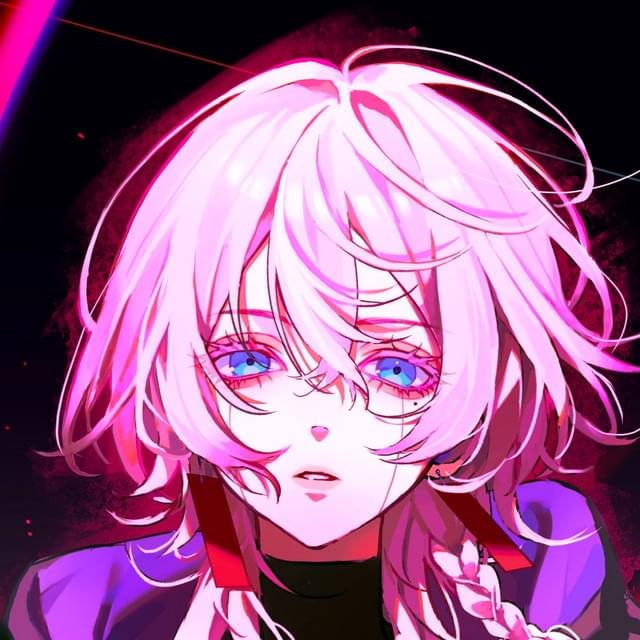
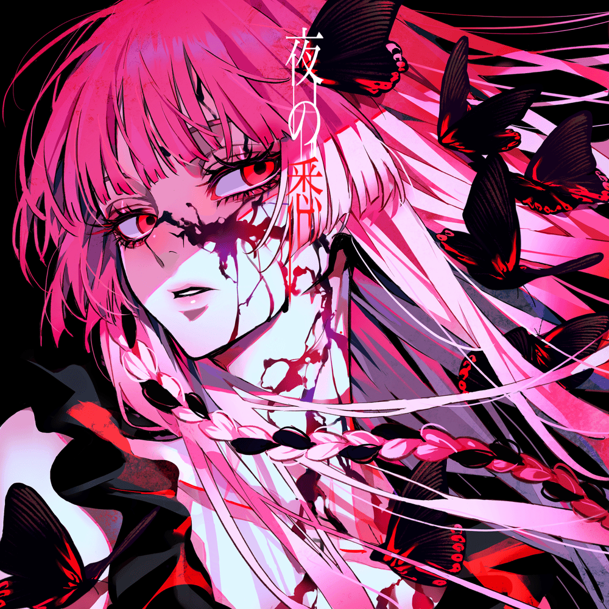

artist Artistes de Música Japonesa
Galeria d'Artistes
Ado - La Veu Misteriosa
Ado és coneguda per la seva poderosa veu i per no revelar la seva aparença.

9Lana - Talent Emergent
9Lana és una vocalista i creadora de contigut destacada per les seves versions i temes originals.
Rosu / ロス - El So Únic
Rosu / ロス és una artista amb un estil distintiu que fusiona diversos gèneres musicals.
